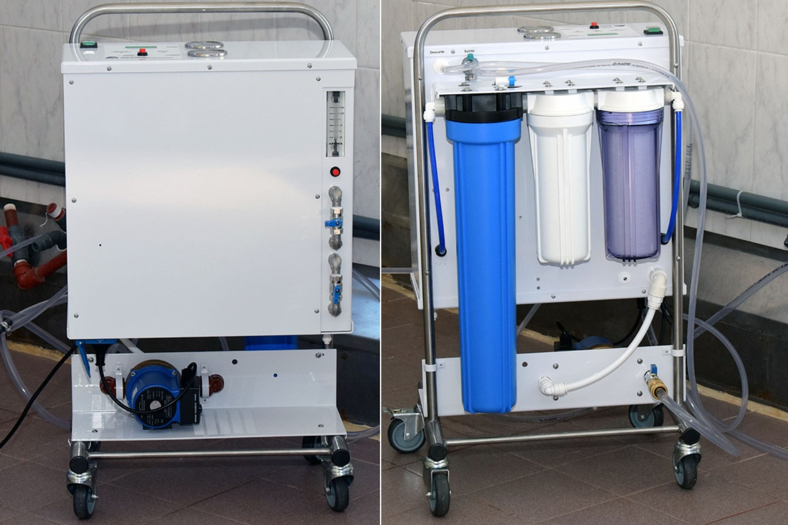
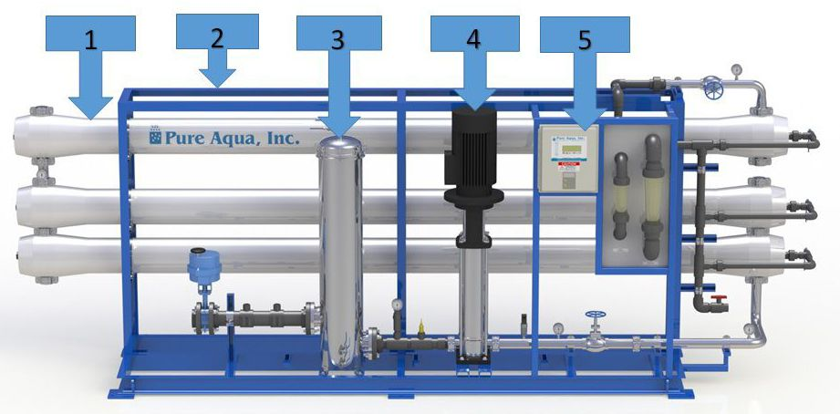
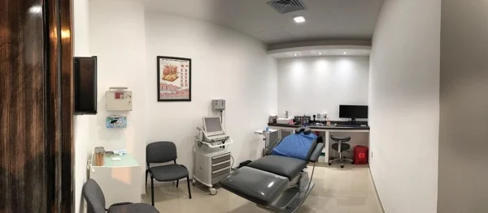
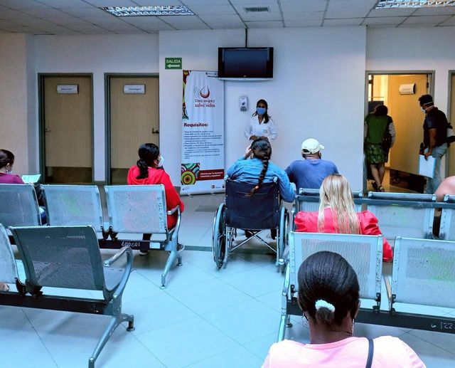

TECNOLOGIA E INFRASTRUCTURA
SALA PRINCIPAL.
En nuestra clinica contamos con dos salas de 23 puestos. Sala cómoda con TV, baño y revistas brinda un ambiente acogedor y familiar para los pacientes y sus visitantes. La presencia de una televisión proporciona entretenimiento y distracción, el baño ofrece comodidad adicional, y las revistas pueden ser una forma agradable de pasar el tiempo mientras se espera. Es importante que los entornos hospitalarios sean acogedores y tranquilos, y esta sala con comodidades adicionales contribuye a ese ambiente.
FOTOSSALA DE AISALDOS PARA PACIENTES PORTADORES DE VIRUS DE HEPATITIS B.
La sala de aislados para pacientes portadores del virus de la hepatitis B tiene la función de prevenir la propagación de la infección a otras personas y proporcionar un entorno controlado para la atención médica del paciente, minimizando el riesgo de transmisión del virus. Además, se pueden utilizar sistemas de ventilación especiales para prevenir la dispersión de partículas virales en el aire.
+INFOMÁQUINAS Y ÓSMOSIS PORTÁTIL PARA DIÁLISIS DE PACIENTES AGUDOS EN EL INTERNADO.
Las máquinas de diálisis portátiles son dispositivos médicos diseñados para proporcionar tratamiento de diálisis a pacientes agudos en el entorno hospitalario. Estas máquinas están equipadas con tecnología de ósmosis que permite filtrar y limpiar la sangre de toxinas y desechos, sustituyendo temporalmente la función renal comprometida. La portabilidad de estas máquinas permite que los pacientes que requieren diálisis aguda reciban tratamiento en su habitación de hospital, lo que reduce la necesidad de trasladarse a una unidad de diálisis dedicada. Esto puede ser especialmente beneficioso para pacientes críticamente enfermos o inmovilizados. El uso de máquinas de diálisis portátiles con tecnología de ósmosis en el internado proporciona una opción conveniente y efectiva para el manejo de la insuficiencia renal aguda, permitiendo un cuidado más personalizado y adaptado a las necesidades individuales del paciente.
LEER MASEQUIPO DE TRATAMIENTO DEL AGUA CON SISTEMA DE ÓSMOSIS INVERSA.
El equipo de tratamiento del agua con sistema de ósmosis inversa es un dispositivo que utiliza una membrana semipermeable para eliminar impurezas y contaminantes del agua. Durante el proceso de ósmosis inversa, el agua se fuerza a pasar a través de esta membrana, lo que permite retener compuestos no deseados como sales, minerales, metales pesados y otros contaminantes, produciendo así agua purificada. Este tipo de equipo es comúnmente utilizado para proporcionar agua limpia y segura en entornos donde la pureza del agua es crítica, como hospitales, laboratorios, plantas de tratamiento de aguas residuales y sistemas de purificación domésticos. La ósmosis inversa es un método eficaz para obtener agua de alta calidad para consumo humano o procesos industriales, ya que puede eliminar una amplia gama de contaminantes.
LEER MASSALA PARA PROCEDIMIENTOS.
Una sala para procedimientos es un espacio en un centro de salud diseñado específicamente para llevar a cabo intervenciones médicas como curaciones, colocación de catéteres, y otros procedimientos similares. Estas salas suelen estar equipadas con el material necesario para realizar estas prácticas de manera segura y estéril, manteniendo un entorno controlado para reducir el riesgo de infecciones. La disposición y el equipamiento de estas salas permiten que el personal médico realice procedimientos menores de manera eficiente, evitando la necesidad de utilizar quirófanos o áreas de hospitalización. Esto contribuye a agilizar la atención médica y brindar un ambiente más cómodo para los pacientes que requieren este tipo de intervenciones.
FOTOSSALAS DE ESPERA CONFORTABLES PARA FAMILIARES.
Las salas de espera para familiares están diseñadas pensando en su comodidad. Tienen asientos muy cómodos, con mucho espacio para que puedan descansar mientras esperan. La iluminación es suave y relajante, y la decoración está pensada para crear un ambiente acogedor. Además, hay una zona con máquinas expendedoras de aperitivos y bebidas, así como una cafetería donde pueden tomar un refrigerio si lo desean. Los baños están limpios y bien equipados para su comodidad. También hay información actualizada sobre el estado de los pacientes, enchufes para cargar dispositivos electrónicos y acceso gratuito a Wi-Fi para que puedan mantenerse conectados mientras esperan.
FOTOS